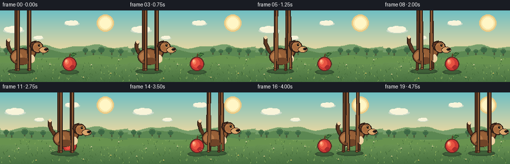

CODING AGENTS AS PIXEL WORLD MODELS
traex/DeepSeek-V4.1-Flash · instance_preservation_0002
点击播放 · 原生 RGB 像素
逐轮保存的候选
回放视频、检查图与代码变化。
每份候选均可单独播放。实际图片检查记录在下方工具轨迹中。
候选 01播放与检查图
点击播放 · 原生 RGB 像素

展开代码变化
--- 上一保存版本
+++ 本次保存版本
@@ -0,0 +1,334 @@
+from __future__ import annotations
+
+from pathlib import Path
+import math
+
+import numpy as np
+from PIL import Image, ImageDraw
+
+import artifact_io
+
+
+W, H = 256, 144
+FRAMES = 20
+FPS = 4.0
+
+SKY_TOP = np.array([112, 190, 194], dtype=float)
+SKY_BOTTOM = np.array([244, 218, 158], dtype=float)
+MEADOW_TOP = np.array([122, 165, 91], dtype=float)
+MEADOW_BOTTOM = np.array([72, 112, 65], dtype=float)
+
+OUTLINE = (47, 31, 23)
+BROWN_DARK = (92, 56, 34)
+BROWN = (139, 88, 51)
+BROWN_LIGHT = (179, 119, 72)
+TAN = (218, 165, 108)
+CREAM = (238, 211, 164)
+
+
+def lerp(a: float, b: float, t: float) -> float:
+ return a + (b - a) * t
+
+
+def smoothstep(edge0: float, edge1: float, value: float) -> float:
+ if edge0 == edge1:
+ return float(value >= edge1)
+ t = max(0.0, min(1.0, (value - edge0) / (edge1 - edge0)))
+ return t * t * (3.0 - 2.0 * t)
+
+
+def gradient_rows(top: np.ndarray, bottom: np.ndarray, count: int) -> np.ndarray:
+ t = np.linspace(0.0, 1.0, count)[:, None]
+ return np.rint(top[None, :] * (1.0 - t) + bottom[None, :] * t).astype(np.uint8)
+
+
+def make_background(frame_index: int) -> Image.Image:
+ rng = np.random.default_rng(2817)
+ yy, xx = np.mgrid[0:H, 0:W]
+
+ sky = gradient_rows(SKY_TOP, SKY_BOTTOM, 90)
+ canvas = np.empty((H, W, 3), dtype=np.uint8)
+ canvas[:90] = sky[:, None, :]
+
+ meadow = gradient_rows(MEADOW_TOP, MEADOW_BOTTOM, H - 82)
+ canvas[82:] = meadow[:, None, :]
+
+ # Broad, quiet bands keep the meadow from reading as a flat color field.
+ band = (np.sin(xx * 0.030 + yy * 0.060) * 2.2).astype(np.int16)
+ shade = (yy >= 82).astype(np.int16)
+ canvas = np.clip(canvas.astype(np.int16) + (band * shade)[:, :, None], 0, 255).astype(np.uint8)
+
+ grain = rng.integers(-2, 3, size=(H, W, 1), dtype=np.int16)
+ grain *= (yy >= 82)[:, :, None]
+ canvas = np.clip(canvas.astype(np.int16) + grain, 0, 255).astype(np.uint8)
+
+ image = Image.fromarray(canvas, "RGB")
+ draw = ImageDraw.Draw(image)
+
+ # Sun and a restrained halo.
+ sun_x, sun_y = 211, 25
+ draw.ellipse((sun_x - 17, sun_y - 17, sun_x + 17, sun_y + 17), fill=(235, 202, 133))
+ draw.ellipse((sun_x - 14, sun_y - 14, sun_x + 14, sun_y + 14), fill=(249, 230, 169))
+ draw.ellipse((sun_x - 11, sun_y - 11, sun_x + 11, sun_y + 11), fill=(255, 246, 198))
+
+ cloud_shift = frame_index * 0.32
+ draw_cloud(draw, int(30 + cloud_shift) % 290 - 24, 31, 1.0)
+ draw_cloud(draw, int(151 + cloud_shift * 0.55) % 300 - 22, 20, 0.72)
+ draw_cloud(draw, int(96 + cloud_shift * 0.8) % 300 - 30, 51, 0.50)
+
+ # Layered hills, each with a fine sunlit rim.
+ far_points = [(0, 87), (0, 72)]
+ for x in range(0, W + 4, 4):
+ y = 72 + 3.2 * math.sin(x * 0.055 + 0.8) + 1.7 * math.sin(x * 0.12)
+ far_points.append((x, int(round(y))))
+ far_points.extend([(W, 88)])
+ draw.polygon(far_points, fill=(119, 158, 108))
+ for x in range(0, W, 2):
+ y = 72 + 3.2 * math.sin(x * 0.055 + 0.8) + 1.7 * math.sin(x * 0.12)
+ draw.point((x, int(round(y))), fill=(166, 191, 125))
+
+ mid_points = [(0, 94), (0, 79)]
+ for x in range(0, W + 4, 4):
+ y = 80 + 4.0 * math.sin(x * 0.041 + 2.1) + 1.2 * math.sin(x * 0.11)
+ mid_points.append((x, int(round(y))))
+ mid_points.extend([(W, 96)])
+ draw.polygon(mid_points, fill=(91, 135, 82))
+ for x in range(0, W, 3):
+ y = 80 + 4.0 * math.sin(x * 0.041 + 2.1) + 1.2 * math.sin(x * 0.11)
+ draw.point((x, int(round(y))), fill=(133, 165, 105))
+
+ # Distant tree crowns sit on the middle ridge.
+ trees = [(12, 80, 5), (23, 82, 4), (49, 79, 6), (63, 82, 4), (86, 81, 5),
+ (171, 80, 5), (187, 82, 4), (203, 79, 6), (224, 81, 4), (242, 82, 5)]
+ for tx, ty, radius in trees:
+ draw.rectangle((tx - 1, ty, tx + 1, ty + 8), fill=(76, 91, 57))
+ draw.ellipse((tx - radius, ty - radius, tx + radius, ty + radius - 1), fill=(61, 104, 69))
+ draw.arc((tx - radius + 1, ty - radius + 1, tx + radius - 1, ty + radius - 2),
+ 190, 340, fill=(103, 139, 85))
+
+ # Soft foreground rise.
+ near_points = [(0, 104), (0, 91)]
+ for x in range(0, W + 4, 4):
+ y = 94 + 3.0 * math.sin(x * 0.035 + 4.2) + 1.1 * math.sin(x * 0.09)
+ near_points.append((x, int(round(y))))
+ near_points.extend([(W, 108)])
+ draw.polygon(near_points, fill=(104, 147, 79))
+
+ # Grass texture is deterministic so the meadow stays fixed between frames.
+ for _ in range(185):
+ gx = int(rng.integers(2, W - 2))
+ gy = int(rng.integers(91, H - 1))
+ if gy < 103 and rng.random() < 0.65:
+ continue
+ color = (68, 107, 58) if rng.random() < 0.55 else (139, 173, 92)
+ length = int(rng.integers(1, 4))
+ lean = int(rng.integers(-1, 2))
+ draw.line((gx, gy, gx + lean, gy - length), fill=color)
+
+ flowers = [(18, 128, (242, 230, 176)), (37, 112, (235, 238, 213)),
+ (72, 136, (245, 218, 117)), (100, 108, (226, 233, 206)),
+ (167, 134, (246, 232, 166)), (183, 109, (239, 237, 213)),
+ (222, 126, (244, 218, 117)), (238, 99, (232, 237, 207))]
+ for fx, fy, petal in flowers:
+ draw.line((fx, fy + 1, fx, fy + 4), fill=(62, 104, 59))
+ draw.point((fx - 1, fy), fill=petal)
+ draw.point((fx + 1, fy), fill=petal)
+ draw.point((fx, fy - 1), fill=petal)
+ draw.point((fx, fy), fill=(214, 166, 66))
+
+ return image
+
+
+def draw_cloud(draw: ImageDraw.ImageDraw, x: int, y: int, scale: float) -> None:
+ s = scale
+ shadow = (204, 218, 201)
+ body = (248, 244, 218)
+ highlight = (255, 251, 232)
+ draw.ellipse((x, y + int(5 * s), x + int(42 * s), y + int(14 * s)), fill=shadow)
+ draw.ellipse((x + int(4 * s), y + int(3 * s), x + int(38 * s), y + int(13 * s)), fill=body)
+ draw.ellipse((x + int(10 * s), y, x + int(29 * s), y + int(10 * s)), fill=body)
+ draw.ellipse((x + int(2 * s), y + int(2 * s), x + int(17 * s), y + int(10 * s)), fill=body)
+ draw.ellipse((x + int(22 * s), y + int(1 * s), x + int(38 * s), y + int(10 * s)), fill=body)
+ draw.line((x + int(8 * s), y + int(4 * s), x + int(18 * s), y + int(2 * s)),
+ fill=highlight, width=max(1, int(2 * s)))
+
+
+def outlined_ellipse(draw: ImageDraw.ImageDraw, box, fill, outline=OUTLINE, width=2) -> None:
+ x0, y0, x1, y1 = [int(round(v)) for v in box]
+ draw.ellipse((x0, y0, x1, y1), fill=outline)
+ draw.ellipse((x0 + width, y0 + width, x1 - width, y1 - width), fill=fill)
+
+
+def draw_apple(draw: ImageDraw.ImageDraw, x: int, ground_y: int, frame_index: int) -> None:
+ # Shadow and fruit are static; only the leaf breathes by a single pixel.
+ draw.ellipse((x - 19, ground_y - 3, x + 19, ground_y + 6), fill=(54, 82, 50))
+ draw.ellipse((x - 15, ground_y - 2, x + 15, ground_y + 4), fill=(63, 94, 56))
+
+ draw.ellipse((x - 14, ground_y - 29, x + 14, ground_y - 1), fill=(91, 37, 33))
+ draw.ellipse((x - 12, ground_y - 27, x + 12, ground_y - 3), fill=(202, 58, 52))
+ draw.ellipse((x - 10, ground_y - 25, x + 5, ground_y - 8), fill=(232, 82, 65))
+ draw.ellipse((x - 9, ground_y - 24, x - 2, ground_y - 14), fill=(247, 125, 91))
+ draw.ellipse((x + 1, ground_y - 12, x + 11, ground_y - 4), fill=(168, 43, 44))
+ draw.arc((x - 13, ground_y - 28, x + 13, ground_y - 2), 25, 145, fill=(118, 36, 37))
+ draw.ellipse((x - 8, ground_y - 23, x - 5, ground_y - 18), fill=(255, 176, 133))
+
+ draw.line((x, ground_y - 28, x + 2, ground_y - 35), fill=(88, 54, 30), width=2)
+ leaf_lift = -1 if frame_index % 10 in (5, 6, 7, 8) else 0
+ draw.polygon([(x + 2, ground_y - 32), (x + 7, ground_y - 37 + leaf_lift),
+ (x + 14, ground_y - 35 + leaf_lift), (x + 7, ground_y - 30)],
+ fill=(52, 105, 52), outline=(40, 72, 41))
+ draw.line((x + 5, ground_y - 33, x + 11, ground_y - 34 + leaf_lift),
+ fill=(108, 149, 75), width=1)
+
+
+def draw_dog(draw: ImageDraw.ImageDraw, body_x: float, ground_y: int,
+ phase: float, gait: float, frame_index: int) -> None:
+ x = int(round(body_x))
+ bob = int(round(1.2 * abs(math.sin(phase * 2.0)) * gait))
+ y = ground_y - bob
+ wag = math.sin(phase * 2.0 + frame_index * 0.35)
+
+ draw.ellipse((x - 33, ground_y - 2, x + 22, ground_y + 8), fill=(54, 82, 50))
+ draw.ellipse((x - 27, ground_y, x + 16, ground_y + 5), fill=(63, 95, 56))
+
+ # Tail, drawn behind the torso.
+ tail_base = (x - 22, y - 31)
+ tail_ctrl = (x - 36 + int(round(wag * 2.0)), y - 47 + int(round(wag * 3.0)))
+ tail_tip = (x - 31 + int(round(wag * 4.0)), y - 60 + int(round(wag * 5.0)))
+ tail_points = []
+ for i in range(9):
+ t = i / 8.0
+ tx = (1 - t) ** 2 * tail_base[0] + 2 * (1 - t) * t * tail_ctrl[0] + t ** 2 * tail_tip[0]
+ ty = (1 - t) ** 2 * tail_base[1] + 2 * (1 - t) * t * tail_ctrl[1] + t ** 2 * tail_tip[1]
+ tail_points.append((int(round(tx)), int(round(ty))))
+ draw.line(tail_points, fill=OUTLINE, width=8, joint="curve")
+ draw.line(tail_points, fill=BROWN_DARK, width=5, joint="curve")
+ draw.ellipse((tail_tip[0] - 3, tail_tip[1] - 3, tail_tip[0] + 3, tail_tip[1] + 3), fill=CREAM)
+
+ def leg(hip_x: int, hip_y: int, stride: float, lift: float,
+ color: tuple[int, int, int], outline: tuple[int, int, int]) -> None:
+ knee_x = hip_x + int(round(stride * 0.35))
+ knee_y = hip_y + 8
+ paw_x = hip_x + int(round(stride))
+ paw_y = y - int(round(lift))
+ points = [(x + hip_x, y + hip_y), (x + knee_x, knee_y),
+ (x + paw_x, paw_y)]
+ draw.line(points, fill=outline, width=6, joint="curve")
+ draw.line(points, fill=color, width=3, joint="curve")
+ draw.ellipse((x + paw_x - 3, paw_y - 2, x + paw_x + 3, paw_y + 2),
+ fill=outline)
+ draw.ellipse((x + paw_x - 2, paw_y - 1, x + paw_x + 2, paw_y + 1),
+ fill=color)
+
+ stride_near_front = 4.0 * math.sin(phase) * gait
+ stride_near_hind = 4.0 * math.sin(phase + math.pi) * gait
+ stride_far_front = 4.0 * math.sin(phase + math.pi) * gait
+ stride_far_hind = 4.0 * math.sin(phase) * gait
+ lift_near_front = max(0.0, 3.2 * math.sin(phase)) * gait
+ lift_near_hind = max(0.0, 3.2 * math.sin(phase + math.pi)) * gait
+ lift_far_front = max(0.0, 3.2 * math.sin(phase + math.pi)) * gait
+ lift_far_hind = max(0.0, 3.2 * math.sin(phase)) * gait
+
+ leg(9, -19, stride_far_front, lift_far_front, BROWN_DARK, (55, 35, 25))
+ leg(-16, -19, stride_far_hind, lift_far_hind, BROWN_DARK, (55, 35, 25))
+
+ # Torso and haunch.
+ outlined_ellipse(draw, (x - 28, y - 43, x + 16, y - 10), BROWN, width=2)
+ draw.ellipse((x - 25, y - 39, x + 10, y - 15), fill=(151, 96, 56))
+ draw.ellipse((x - 24, y - 35, x - 4, y - 17), fill=BROWN_LIGHT)
+ draw.arc((x - 27, y - 42, x + 15, y - 11), 18, 150, fill=(80, 47, 30))
+ draw.ellipse((x - 18, y - 24, x + 12, y - 11), fill=(112, 68, 40))
+
+ # Neck bridge to the head.
+ draw.polygon([(x + 6, y - 41), (x + 17, y - 47), (x + 25, y - 34),
+ (x + 17, y - 19), (x + 7, y - 24)],
+ fill=OUTLINE)
+ draw.polygon([(x + 8, y - 39), (x + 16, y - 45), (x + 22, y - 34),
+ (x + 16, y - 22), (x + 9, y - 26)],
+ fill=BROWN)
+
+ # Cream chest patch makes the dog read clearly against the meadow.
+ draw.ellipse((x + 11, y - 30, x + 21, y - 14), fill=CREAM)
+ draw.arc((x + 11, y - 30, x + 21, y - 14), 55, 235, fill=(198, 157, 110))
+
+ # Near legs.
+ leg(11, -18, stride_near_front, lift_near_front, BROWN, OUTLINE)
+ leg(-12, -18, stride_near_hind, lift_near_hind, BROWN, OUTLINE)
+
+ # Head and floppy ear.
+ head_bob = int(round(0.8 * math.sin(phase * 2.0 + 0.7) * gait))
+ hx = x + 26
+ hy = y - 44 + head_bob
+ ear_sway = int(round(math.sin(phase + 0.4) * gait))
+ draw.polygon([(hx - 13, hy - 12), (hx - 2, hy - 15), (hx + 2, hy - 7),
+ (hx - 3, hy + 9 + ear_sway), (hx - 11, hy + 5 + ear_sway),
+ (hx - 15, hy - 4)],
+ fill=OUTLINE)
+ draw.polygon([(hx - 11, hy - 10), (hx - 3, hy - 12), (hx, hy - 6),
+ (hx - 4, hy + 6 + ear_sway), (hx - 9, hy + 3 + ear_sway),
+ (hx - 12, hy - 3)],
+ fill=(91, 53, 35))
+ draw.arc((hx - 10, hy - 10, hx - 2, hy + 6), 185, 300, fill=(139, 84, 52))
+
+ outlined_ellipse(draw, (hx - 10, hy - 13, hx + 12, hy + 10), BROWN_LIGHT, width=2)
+ draw.ellipse((hx - 7, hy - 10, hx + 8, hy + 5), fill=(168, 107, 62))
+ draw.ellipse((hx + 1, hy - 9, hx + 9, hy - 1), fill=(194, 137, 82))
+
+ # Muzzle, nose, mouth, eye.
+ outlined_ellipse(draw, (hx + 4, hy - 2, hx + 23, hy + 10), TAN, width=1)
+ draw.ellipse((hx + 14, hy + 1, hx + 22, hy + 5), fill=(30, 24, 21))
+ draw.point((hx + 16, hy + 2), fill=(117, 94, 79))
+ draw.line((hx + 20, hy + 5, hx + 20, hy + 7, hx + 17, hy + 8),
+ fill=(100, 65, 44), width=1)
+ draw.ellipse((hx + 2, hy - 8, hx + 6, hy - 3), fill=(35, 26, 21))
+ draw.point((hx + 3, hy - 7), fill=(255, 246, 216))
+ draw.line((hx - 1, hy - 10, hx + 4, hy - 11), fill=(100, 60, 38), width=1)
+ draw.arc((hx - 8, hy - 8, hx + 8, hy + 7), 215, 330, fill=(206, 150, 91))
+
+ # A few dust motes behind the paws only while the gait is active.
+ if gait > 0.25:
+ dust = int(round(2.0 + 1.5 * gait))
+ for i in range(3):
+ dx = x - 23 - i * 4
+ dy = ground_y - 2 - (i % 2) * 2
+ draw.point((dx, dy), fill=(205, 190, 133))
+ if i < dust:
+ draw.point((dx - 2, dy - 1), fill=(225, 205, 148))
+
+
+def make_frames() -> np.ndarray:
+ frames = []
+ start_x = 48.0
+ end_x = 204.0
+ for i in range(FRAMES):
+ image = make_background(i)
+ draw = ImageDraw.Draw(image)
+
+ draw_apple(draw, 139, 122, i)
+
+ travel = smoothstep(3.0, 18.0, float(i))
+ body_x = lerp(start_x, end_x, travel)
+ gait = min(smoothstep(2.0, 5.0, float(i)), 1.0 - smoothstep(17.0, 19.0, float(i)))
+ phase = 2.0 * math.pi * max(0.0, i - 3.0) / 8.0
+ draw_dog(draw, body_x, 119, phase, gait, i)
+
+ # Foreground blades overlap the paws and seat the subjects in the grass.
+ blade_positions = [(8, 124), (22, 138), (65, 127), (104, 140),
+ (156, 130), (173, 141), (231, 128), (247, 138)]
+ for bx, by in blade_positions:
+ draw.line((bx, by, bx - 2, by - 5), fill=(57, 95, 53))
+ draw.line((bx + 1, by, bx + 2, by - 4), fill=(89, 132, 67))
+
+ frames.append(np.asarray(image, dtype=np.uint8))
+ return np.stack(frames, axis=0)
+
+
+def main() -> None:
+ case_dir = Path(__file__).resolve().parent
+ frames = make_frames()
+ artifact_io.save(frames, case_dir)
+ print(f"saved {len(frames)} frames to {case_dir}")
+
+
+if __name__ == "__main__":
+ main()
候选 02播放与检查图
点击播放 · 原生 RGB 像素
展开代码变化
--- 上一保存版本
+++ 本次保存版本
@@ -191,19 +191,43 @@
draw.ellipse((x - 33, ground_y - 2, x + 22, ground_y + 8), fill=(54, 82, 50))
draw.ellipse((x - 27, ground_y, x + 16, ground_y + 5), fill=(63, 95, 56))
- # Tail, drawn behind the torso.
- tail_base = (x - 22, y - 31)
- tail_ctrl = (x - 36 + int(round(wag * 2.0)), y - 47 + int(round(wag * 3.0)))
- tail_tip = (x - 31 + int(round(wag * 4.0)), y - 60 + int(round(wag * 5.0)))
- tail_points = []
+ # A tapered curved tail, built as one clean polygon behind the torso.
+ tail_base = (x - 22, y - 34)
+ tail_ctrl = (x - 35 + int(round(wag * 2.0)), y - 44 + int(round(wag * 3.0)))
+ tail_tip = (x - 29 + int(round(wag * 3.0)), y - 58 + int(round(wag * 4.0)))
+ tail_center = []
for i in range(9):
t = i / 8.0
tx = (1 - t) ** 2 * tail_base[0] + 2 * (1 - t) * t * tail_ctrl[0] + t ** 2 * tail_tip[0]
ty = (1 - t) ** 2 * tail_base[1] + 2 * (1 - t) * t * tail_ctrl[1] + t ** 2 * tail_tip[1]
- tail_points.append((int(round(tx)), int(round(ty))))
- draw.line(tail_points, fill=OUTLINE, width=8, joint="curve")
- draw.line(tail_points, fill=BROWN_DARK, width=5, joint="curve")
- draw.ellipse((tail_tip[0] - 3, tail_tip[1] - 3, tail_tip[0] + 3, tail_tip[1] + 3), fill=CREAM)
+ tail_center.append((tx, ty))
+ left = []
+ right = []
+ for i, (tx, ty) in enumerate(tail_center):
+ t = i / 8.0
+ half_width = lerp(4.0, 1.3, t)
+ if i == 0:
+ dx, dy = tail_center[1][0] - tx, tail_center[1][1] - ty
+ else:
+ dx, dy = tx - tail_center[i - 1][0], ty - tail_center[i - 1][1]
+ length = max(0.01, math.hypot(dx, dy))
+ nx, ny = -dy / length, dx / length
+ left.append((int(round(tx + nx * half_width)), int(round(ty + ny * half_width))))
+ right.append((int(round(tx - nx * half_width)), int(round(ty - ny * half_width))))
+ draw.polygon(left + right[::-1], fill=OUTLINE)
+ inner_left = [(int(round((px + tail_center[i][0]) * 0.5)),
+ int(round((py + tail_center[i][1]) * 0.5)))
+ for i, (px, py) in enumerate(left)]
+ inner_right = [(int(round((px + tail_center[i][0]) * 0.5)),
+ int(round((py + tail_center[i][1]) * 0.5)))
+ for i, (px, py) in enumerate(right)]
+ draw.polygon(inner_left + inner_right[::-1], fill=BROWN_DARK)
+ draw.line([(int(round(tx)), int(round(ty))) for tx, ty in tail_center[2:7]],
+ fill=(128, 79, 46), width=1)
+ draw.ellipse((tail_tip[0] - 3, tail_tip[1] - 3, tail_tip[0] + 3, tail_tip[1] + 3),
+ fill=OUTLINE)
+ draw.ellipse((tail_tip[0] - 2, tail_tip[1] - 2, tail_tip[0] + 2, tail_tip[1] + 2),
+ fill=CREAM)
def leg(hip_x: int, hip_y: int, stride: float, lift: float,
color: tuple[int, int, int], outline: tuple[int, int, int]) -> None:
候选 03播放与检查图
可观测工具轨迹
实际执行的命令与返回图片。
命令 1exit 0
/bin/bash -lc "pwd && rg --files -g 'prompt.txt' -g 'GENERATION_RULES.md' -g 'task_spec.json' -g '"'!node_modules'"' -g '"'!vendor'"'"
命令 2exit 0
/bin/bash -lc 'git status --short && find . -maxdepth 2 -type f | sort | head -200'
命令 3exit 0
/bin/bash -lc 'cat prompt.txt'
命令 4exit 0
/bin/bash -lc 'cat GENERATION_RULES.md'
命令 5exit 0
/bin/bash -lc 'cat task_spec.json'
命令 6exit 0
/bin/bash -lc "sed -n '1,240p' artifact_io.py && sed -n '1,240p' player_template.html"
命令 7exit 0
/bin/bash -lc 'python generate.py'
命令 8exit 0
/bin/bash -lc 'file inspection.png transition_check.png frames/00.png frames/19.png pixels.npz index.html && identify inspection.png frames/00.png frames/09.png frames/19.png 2>/dev/null || true'
命令 9exit 0
/bin/bash -lc "command -v chafa || true; command -v viu || true; command -v jp2 || true; command -v ffmpeg || true; python - <<'PY'
import numpy as np
from PIL import Image
p=np.load('pixels.npz')['pixels']
print(p.shape,p.dtype,p.min(),p.max())
frames=np.stack([Image.open(f'frames/{i:02d}.png') for i in range(20)])
a=np.asarray(frames)
print('frame means',a.mean(axis=(1,2,3)).round(2).tolist())
print('diff mean',np.abs(a[1:].astype(int)-a[:-1].astype(int)).mean(axis=(1,2,3)).round(3).tolist())
PY"命令 10exit 0
/bin/bash -lc "python - <<'PY'
from PIL import Image
import numpy as np
for fi in [0,9,19]:
im=np.asarray(Image.open(f'frames/{fi:02d}.png'))
crop=im[52:126,8:255]
# 2x2 blocks, classify by palette families
pal={
' ':([135,180,140], 'bg'), '.':([102,143,84],'green'), ':':([67,107,58],'green'),
'#':([47,31,23],'dog'), 'b':([92,56,34],'dog'), 'B':([139,88,51],'dog'),
'L':([179,119,72],'dog'), 't':([218,165,108],'dog'), 'c':([238,211,164],'dog'),
'r':([210,65,53],'apple'), 'R':([145,40,40],'apple'), 'y':([249,230,169],'sky')
}
keys=list(pal); cols=np.array([v[0] for v in pal.values()])
out=[]
for y in range(0,crop.shape[0]-1,2):
line=''
for x in range(0,crop.shape[1]-1,2):
c=crop[y:y+2,x:x+2].mean((0,1))
d=((cols-c)**2).sum(1)
k=keys[d.argmin()]
line+=k
out.append(line.rstrip())
print(f'--- frame {fi} ---')
print('\\n'.join(out))
PY"命令 11exit 0
/bin/bash -lc "for c in chafa viu img2txt jp2a ffmpeg convert magick; do printf '%s: ' \""'$c"; command -v "$c" || true; done'
命令 12exit 0
/bin/bash -lc "python - <<'PY'
from PIL import Image
import numpy as np
for fi in [0,9,19]:
im=np.asarray(Image.open(f'frames/{fi:02d}.png'))
# extract dog region only and classify to dog-family using saturation/ranges
crop=im[58:126,0:256]
def key(c):
r,g,b=map(int,c)
if r<55 and g<42 and b<35: return '#'
if r>120 and g<115 and b<90 and r>g*1.3: return 'r'
if r>75 and r>g*1.25 and g>b*1.1: return 'D'
if r>150 and g>120 and b>85 and r>g and g>b: return 'c'
if g>r+8 and g>b+8: return ' '
if b>r+10 and b>g+5: return ' '
return '.'
for y in range(0,crop.shape[0],2):
s=''
for x in range(0,256,2):
c=crop[y:y+2,x:x+2].reshape(-1,3).mean(0)
s+=key(c)
print(s.rstrip())
print('---')
PY"命令 13exit 0
/bin/bash -lc "python - <<'PY'
from PIL import Image
import numpy as np
for i in range(20):
a=np.asarray(Image.open(f'frames/{i:02d}.png')).astype(int)
red=(a[:,:,0]>145)&(a[:,:,0]>a[:,:,1]*1.55)&(a[:,:,0]>a[:,:,2]*1.45)
brown=(a[:,:,0]>75)&(a[:,:,0]<200)&(a[:,:,0]>a[:,:,1]*1.15)&(a[:,:,1]>a[:,:,2]*1.05)&(a[:,:,1]<145)
ys,xs=np.where(red)
print(i,'red',red.sum(), (xs.min(),xs.max(),ys.min(),ys.max()) if len(xs) else None,'brown',brown.sum())
PY"命令 14exit 0
/bin/bash -lc "python - <<'PY'
from PIL import Image
import numpy as np
im=np.asarray(Image.open('frames/00.png'))
# dog expected x 10..102 y 55..124
x0,x1,y0,y1=8,104,54,125
crop=im[y0:y1,x0:x1]
pal = np.array([
[47,31,23], [92,56,34], [139,88,51], [179,119,72], [218,165,108], [238,211,164], [112,68,40],
[122,165,91],[72,112,65],[104,147,79],[91,135,82]
])
chars='#bBLtcC.::+'
for y in range(0,crop.shape[0],1):
s=''
for x in range(0,crop.shape[1],1):
c=crop[y,x].astype(int)
d=((pal-c)**2).sum(1)
s+=chars[d.argmin()]
print(s.rstrip())
PY"命令 15exit 0
/bin/bash -lc "python - <<'PY'
from PIL import Image
import numpy as np
for fi,x0,x1,y0,y1 in [(0,0,110,50,125),(9,60,175,50,125),(19,125,256,50,125)]:
a=np.asarray(Image.open(f'frames/{fi:02d}.png'))
c=a[y0:y1,x0:x1]
print('\\nFRAME',fi)
for y in range(0,c.shape[0],2):
s=''
for x in range(0,c.shape[1],2):
q=c[y:y+2,x:x+2].reshape(-1,3).mean(0)
r,g,b=q
if r<55 and g<45: ch='#'
elif r>210 and g>180: ch='c'
elif r>175 and r>g*1.12 and g>b*1.2: ch='t'
elif r>115 and r>g*1.18 and g>b*1.05: ch='B'
elif r>78 and r>g*1.16 and g>b*1.05: ch='b'
elif r>170 and g<105 and b<100: ch='r'
elif r>80 and g<80 and b<80: ch='D'
elif g>r+8 and g>b+8: ch=' '
else: ch='.'
s+=ch
print(s.rstrip())
PY"命令 16exit 0
/bin/bash -lc "python - <<'PY'
from PIL import Image
import numpy as np
from scipy import ndimage
for i in (0,9,19):
a=np.asarray(Image.open(f'frames/{i:02d}.png')).astype(int)
r,g,b=a[:,:,0],a[:,:,1],a[:,:,2]
mask=((r<60)&(g<45)&(b<38))|((r>70)&(r<245)&(r>g*1.12)&(g>b*1.03)&(g>35))
lab,n=ndimage.label(mask)
sizes=np.bincount(lab.ravel())[1:]
big=sorted(sizes,reverse=True)[:5]
print(i,n,big)
PY"命令 17exit 0
/bin/bash -lc "python - <<'PY'
from PIL import Image
import numpy as np
for fi in (0,9,19):
a=np.asarray(Image.open(f'frames/{fi:02d}.png'))
# find exact fill colors and report bounding boxes
for name,c,tol in [('dogB',(139,88,51),0),('dogL',(179,119,72),0),('apple',(202,58,52),0)]:
d=np.abs(a.astype(int)-np.array(c)).max(2)
ys,xs=np.where(d<=tol)
print(fi,name,len(xs),(xs.min(),xs.max(),ys.min(),ys.max()) if len(xs) else None)
PY"命令 18exit 0
/bin/bash -lc "python - <<'PY'
import numpy as np
from PIL import Image
for i in range(20):
a=np.asarray(Image.open(f'frames/{i:02d}.png'))
# green patch detection rough background residual
print(f'{i:02d}', a[70:125,0:256:16].mean(axis=(0,2)).round(1).tolist())
PY"命令 19exit 0
/bin/bash -lc "python - <<'PY'
from PIL import Image
im=Image.open('frames/00.png')
# Save enlarged dog and apple crops in tmp for native-inspection work.
im.crop((0,48,115,125)).resize((460,308),Image.Resampling.NEAREST).save('.tmp/dog0.png')
im.crop((110,82,170,130)).resize((360,288),Image.Resampling.NEAREST).save('.tmp/apple.png')
Image.open('frames/09.png').crop((65,48,205,125)).resize((560,308),Image.Resampling.NEAREST).save('.tmp/crossing.png')
Image.open('frames/19.png').crop((140,48,256,125)).resize((464,308),Image.Resampling.NEAREST).save('.tmp/dog19.png')
PY"命令 20exit 0
/bin/bash -lc "python - <<'PY'
from PIL import Image
import numpy as np
im=np.asarray(Image.open('frames/00.png'))
# exact non-sky colors in top area and bounds
for y in [50,55,60,65,70,75,80]:
row=im[y]
# print runs of pixels that are not sky-ish / greenish
mask=~(((row[:,1]>row[:,0]+10)&(row[:,1]>row[:,2]+3))|((row[:,2]>row[:,0]+20)&(row[:,1]>row[:,0]+10)))
xs=np.where(mask)[0]
print(y,[(int(x),row[x].tolist()) for x in xs[:30]])
PY"命令 21exit 0
/bin/bash -lc "python generate.py && python - <<'PY'
from PIL import Image
im=Image.open('frames/00.png')
im.crop((0,48,115,125)).resize((460,308),Image.Resampling.NEAREST).save('.tmp/dog0_revised.png')
PY"命令 22exit 0
/bin/bash -lc "python - <<'PY'
from PIL import Image
import numpy as np
for fi in (0,9,19):
a=np.asarray(Image.open(f'frames/{fi:02d}.png'))
print('\\nFRAME',fi)
x0,x1=(0,110) if fi==0 else ((60,175) if fi==9 else (125,256))
c=a[48:125,x0:x1]
for y in range(0,c.shape[0],2):
s=''
for x in range(0,c.shape[1],2):
q=c[y:y+2,x:x+2].reshape(-1,3).mean(0); r,g,b=q
if r<55 and g<45: ch='#'
elif r>210 and g>180: ch='c'
elif r>175 and r>g*1.12 and g>b*1.2: ch='t'
elif r>115 and r>g*1.18 and g>b*1.05: ch='B'
elif r>78 and r>g*1.16 and g>b*1.05: ch='b'
elif r>170 and g<105 and b<100: ch='r'
elif r>80 and g<80 and b<80: ch='D'
elif g>r+8 and g>b+8: ch=' '
else: ch='.'
s+=ch
print(s.rstrip())
PY"命令 23exit 0
/bin/bash -lc "python - <<'PY'
from PIL import Image
import numpy as np
a=np.asarray(Image.open('frames/00.png'))
# report tail-area non-background runs for y 58..88
for y in range(58,90):
row=a[y,:45]
mask=(row[:,0]>65)&(row[:,0]>row[:,1]*1.15)&(row[:,1]>row[:,2]*1.05)&(row[:,1]<150)
xs=np.where(mask)[0]
if len(xs): print(y, xs.min(),xs.max(), len(xs), [row[x].tolist() for x in xs[:4]])
PY"命令 24exit 0
/bin/bash -lc "python - <<'PY'
from PIL import Image
import numpy as np
a=np.asarray(Image.open('frames/00.png'))
# Print row x 10..48 y55..90 compact exact-ish class
for y in range(55,92):
s=''
for x in range(8,49):
r,g,b=map(int,a[y,x])
if r<60 and g<48: ch='#'
elif r>220 and g>180: ch='C'
elif r>150 and r>g*1.2 and g>b*1.05: ch='t'
elif r>110 and r>g*1.2 and g>b*1.04: ch='B'
elif r>70 and r>g*1.15 and g>b*1.02: ch='b'
elif g>r+5 and g>b+5: ch=' '
else: ch='.'
s+=ch
print(f'{y:3d} {s}')
PY"命令 25exit 0
/bin/bash -lc "python - <<'PY' import generate from PIL import Image import numpy as np a=np.asarray(generate.make_background(0)) for p in [(35,55),(18,58),(35,60),(30,70),(35,80),(35,50)]: print(p,a[p[1],p[0]].tolist()) PY"
命令 26exit 0
/bin/bash -lc "python - <<'PY'
import generate
from PIL import Image
import numpy as np
# call and introspect via tracing? Recreate sequence: background then dog only
im=generate.make_background(0)
d=generate.ImageDraw.Draw(im)
generate.draw_dog(d,48,119,0,0,0)
a=np.asarray(im)
for y in range(55,92):
s=''
for x in range(8,49):
r,g,b=map(int,a[y,x])
if r<60 and g<48: ch='#'
elif r>220 and g>180: ch='C'
elif r>150 and r>g*1.2 and g>b*1.05: ch='t'
elif r>110 and r>g*1.2 and g>b*1.04: ch='B'
elif r>70 and r>g*1.15 and g>b*1.02: ch='b'
elif g>r+5 and g>b+5: ch=' '
else: ch='.'
s+=ch
print(f'{y:3d} {s}')
PY"命令 27exit 0
/bin/bash -lc "python - <<'PY'
from PIL import Image
import numpy as np
for fi in (0,9,19):
a=np.asarray(Image.open(f'frames/{fi:02d}.png'))
red=(a[:,:,0]>145)&(a[:,:,0]>a[:,:,1]*1.55)&(a[:,:,0]>a[:,:,2]*1.45)
# apple only x 120..160
red[:,:120]=False; red[:,160:]=False
ys,xs=np.where(red)
print(fi, red.sum(), (xs.min(),xs.max(),ys.min(),ys.max()) if len(xs) else None)
PY"命令 28exit 0
/bin/bash -lc "python - <<'PY'
import json, re
from pathlib import Path
import numpy as np
from PIL import Image
spec=json.loads(Path('task_spec.json').read_text())
frames=sorted(Path('frames').glob('*.png'))
assert len(frames)==spec['frames'], len(frames)
arr=np.stack([np.asarray(Image.open(p).convert('RGB')) for p in frames])
assert arr.shape==(spec['frames'],spec['height'],spec['width'],3),arr.shape
assert arr.dtype==np.uint8
p=np.load('pixels.npz')['pixels']
assert p.shape==(spec['height'],spec['width'],spec['frames'])
html=Path('index.html').read_text()
assert 'window.__pixelReady=true' in html and '__DATA__' not in html
assert Path('inspection.png').is_file() and Path('transition_check.png').is_file()
print('validated:',arr.shape,'fps',spec['fps'],'duration',len(frames)/spec['fps'],'s')
print('pixel array:',p.shape,p.dtype)
print('html bytes:',len(html))
print('frame files:',len(frames))
PY
python -m py_compile generate.py
sha256sum pixels.npz index.html frames/00.png frames/19.png"保存候选 3 份；完成命令 28 次；可验证图片返回 0 张。原始 API 响应与完整日志保留在本地。